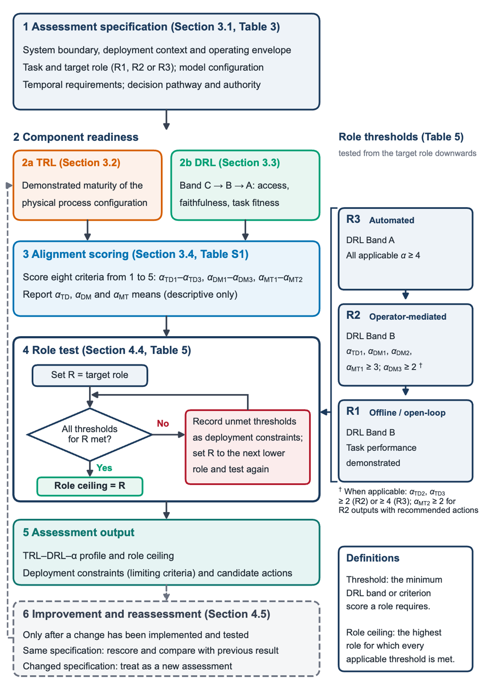

TRL
Demonstrated maturity of the physical process configuration. Reported in the profile; not a role threshold.
TRL–DRL–α framework
Identify the highest operational role a digital twin can currently support within a defined system boundary and deployment context.
The toolkit applies the scoring and role-mapping rules of the TRL–DRL–α framework. It reports the role ceiling, from offline analysis and open-loop decision support (R1) through online operator-mediated support (R2) to automated closed-loop optimisation or control (R3), and records every unmet requirement as a deployment constraint.
Companion to: Digital Twins That Deliver: A Role-Based Deployment Readiness Framework for Biomanufacturing Systems
Chengwan Bai1, Rachel L Gomes1, Oliver J Fisher1* 1Food Water Waste and Resource Circularity Research Group, Faculty of Engineering, University of Nottingham, University Park, NG7 2RD, UK *Corresponding author: Oliver.Fisher2@nottingham.ac.uk
Demonstrated maturity of the physical process configuration. Reported in the profile; not a role threshold.
Band C → B → A: access, faithfulness, task fitness. R1 and R2 require Band B; R3 requires Band A.
Eight interface criteria scored 1–5. Thresholds apply to individual criteria; dimension means are descriptive only.
Tested from the target role downwards: the highest role for which every applicable threshold is met.

Step 1 · Section 3.1, Table 3
The specification fixes the system boundary, operating envelope, task and target role against which every score is interpreted. Readiness is not inferred beyond these conditions.
The integration role being assessed. Lower roles are tested only if the target is not supported.
Step 2 · Sections 3.2–3.3
TRL and DRL describe the physical process and the data independently of how they are connected, so they are assigned before alignment is scored.
2a
Assign TRL to the physical process configuration in the system boundary: what has been built and tested, at what scale, with which equipment and under which conditions.
2b
Select the highest band fully achieved for the stated task (Table 4). Bands are hierarchical: Band A requires Bands B and C; Band B requires Band C.
Step 3 · Sections 3.4 and 4.2
Score all eight criteria with an integer from 1 to 5 using the anchors. The R2 and R3 minimums shown on each criterion are the Table 5 thresholds.
Step 4 · Section 4.4, Table 5
αTD2 and αTD3 are always scored, but they enter the role test only when their conditions affect the task. αMT2 enters the R2 test only when R2 outputs include recommended actions; it is always required for R3.
Step 5 · Assessment output